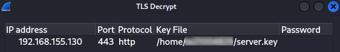
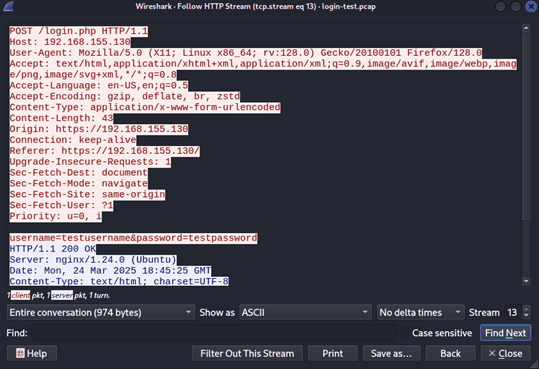

Decrypting captured TLS 1.2 credentials
- What I did
- Captured an HTTPS login between two VMs, then decrypted it afterwards using the server's private key.
- Tools
- tcpdump, Wireshark, nginx
- Outcome
- Recovered the username and password in plaintext, showing why RSA key exchange without forward secrecy is a risk.
Objective
To show how TLS 1.2 sessions using RSA key exchange are vulnerable if the server's private key is compromised. Because RSA key exchange doesn't provide forward secrecy, traffic recorded earlier can be decrypted after the fact.
Environment & Threat Model
- Three VMs: a client, an attacker and an nginx webserver with a self-signed certificate.
- Webserver restricted to TLS 1.2 RSA cipher suites only.
- Threat model: the attacker can capture traffic on the network and has got hold of the server's private key.
Method
Capturing the login
The client logged into a simple HTTPS login form on the webserver while I captured the traffic from the attacker VM with tcpdump, saving it as a .pcap to analyse in Wireshark.
Decrypting with the private key
Without the key, Wireshark could only show the login as encrypted TLS application data. I then added the webserver's private key to Wireshark's TLS settings against the server's IP and port 443.

This step only works because the connection used RSA key exchange. With ECDHE, the session keys never cross the wire encrypted with the server's key, so the private key alone can't decrypt anything.
Results
With the key loaded, Wireshark decrypted the session and the login request appeared as normal HTTP, including the username and password in plaintext.

/login.php shows up as HTTP, with a "Decrypted TLS" tab at the bottom.
Analysis
- Risk: with RSA key exchange, anyone holding the private key can decrypt every session they've recorded, however long ago it was captured.
- Limitations: this only applies where RSA cipher suites are still enabled. Most modern servers use ECDHE, and TLS 1.3 removed RSA key exchange altogether. Forward secrecy also only protects recorded traffic. A stolen key would still let an attacker impersonate the server going forward.
- Learning outcome: built the lab, captured and analysed encrypted traffic, and put the cryptography into practice.
Defensive Relevance
- Disable RSA key exchange and only allow forward secret cipher suites such as ECDHE, or move to TLS 1.3.
- Audit TLS configurations regularly. Nmap's
ssl-enum-ciphersscript flags this exact issue, as shown in my reconnaissance project. - Treat a leaked private key as exposing all traffic captured with it, and revoke and reissue the certificate straight away.
Ethical Context
Carried out entirely in my own lab. No external systems were targeted.